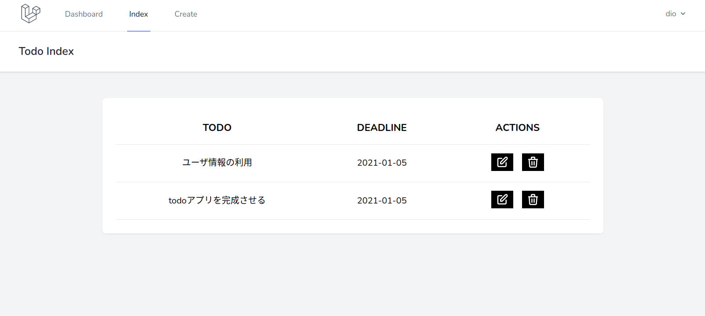

ユーザ情報の利用
はじめのほうで，ユーザ認証を行うbreezeライブラリをインストールしたため，これを利用してユーザ管理を行う．
まず，認証ユーザのみがアプリケーションの機能を利用できるように処理を変更する．
続いて，データ作成時にユーザ情報を含めることで，ログインユーザが作成したデータのみを扱えるように処理を変更する．
ログインしていないユーザはアプリケーションにアクセスできないようにする．
/laravel_todo/app/Http/Controllers/TodoController.phpを以下のように編集する．
<?php
namespace App\Http\Controllers;
use Illuminate\Http\Request;
use Validator;
use App\Models\Todo;
// ↓追加
use Auth;
class TodoController extends Controller
{
// ↓関数を作成
public function __construct()
{
$this->middleware(['auth']);
}
// ...省略
}
【解説】
- ユーザの認証情報を使用するため，
use Auth;を記述している．__construct()関数は，その他の関数が実行される場合にその前に実行される．middleware(['auth'])はログイン状況を確認して，ログインしていない状態ならログインページに戻す処理を実行する．
一旦ログアウトしてURL直打ちするとログイン画面に戻される状態になっていればOK．
todoテーブルにユーザIDカラムを追加する
📦 Laravelコンテナ内の操作
$ docker-compose exec laravel.test bash root@8544d96d2334:/var/www/html#
カラムの変更はマイグレーションファイルから行う．
laravel_todo/database/migration/2020_12_31_033638_create_todos_table.phpを開く．
下記にように編集する．
カラム名は必ずuser_idとすること（あとでUserモデルと連携させるため）．
他のテーブルとrelationさせるためには，カラム名を「
モデル名小文字_id」とする必要がある．
<?php
use Illuminate\Database\Migrations\Migration;
use Illuminate\Database\Schema\Blueprint;
use Illuminate\Support\Facades\Schema;
class CreateTodosTable extends Migration
{
/**
* Run the migrations.
*
* @return void
*/
public function up()
{
Schema::create('todos', function (Blueprint $table) {
$table->id();
// ↓追加
$table->integer('user_id');
$table->string('todo');
$table->date('deadline');
$table->text('comment')->nullable();
// ↑ここまで
$table->timestamps();
});
}
/**
* Reverse the migrations.
*
* @return void
*/
public function down()
{
Schema::dropIfExists('todos');
}
}
以下のコマンドを実行する．:freshをつけることで，既存のテーブルを一旦消去して再度マイグレーションを実行する．
$ php artisan migrate:fresh
実行結果
Dropped all tables successfully.
Migration table created successfully.
Migrating: 2014_10_12_000000_create_users_table
Migrated: 2014_10_12_000000_create_users_table (33.21ms)
Migrating: 2014_10_12_100000_create_password_resets_table
Migrated: 2014_10_12_100000_create_password_resets_table (25.65ms)
Migrating: 2019_08_19_000000_create_failed_jobs_table
Migrated: 2019_08_19_000000_create_failed_jobs_table (28.30ms)
Migrating: 2020_12_31_033638_create_todos_table
Migrated: 2020_12_31_033638_create_todos_table (17.26ms)
テーブルの確認
📦 MySQLコンテナ内の操作
$ docker-compose exec mysql bash root@d984f6614597:/#
うまくいったら，mysqlにログインしてテーブルを確認する．パスワードはpassword．
$ mysql -u sail -p
mysql> use laravel_todo;
Reading table information for completion of table and column names
You can turn off this feature to get a quicker startup with -A
Database changed
mysql> show tables;
+------------------------+
| Tables_in_laravel_todo |
+------------------------+
| failed_jobs |
| migrations |
| password_resets |
| todos |
| users |
+------------------------+
5 rows in set (0.00 sec)
mysql> desc todos;
+------------+-----------------+------+-----+---------+----------------+
| Field | Type | Null | Key | Default | Extra |
+------------+-----------------+------+-----+---------+----------------+
| id | bigint unsigned | NO | PRI | NULL | auto_increment |
| user_id | int | NO | | NULL | |
| todo | varchar(191) | NO | | NULL | |
| deadline | date | NO | | NULL | |
| comment | text | YES | | NULL | |
| created_at | timestamp | YES | | NULL | |
| updated_at | timestamp | YES | | NULL | |
+------------+-----------------+------+-----+---------+----------------+
7 rows in set (0.01 sec)
mysql> exit;
Bye
user_idカラムが追加されていればOK．
ユーザテーブルは初期化されているので再度registerすること．
データ追加時にuser_idを追加
todoのデータを作成する際に，「誰が作成したのか」がわかるように，データにログインユーザのIDを追加する．
/laravel_todo/app/Http/Controllers/TodoController.phpのstore()を内容を以下のように編集する．
public function store(Request $request)
{
// バリデーション
$validator = Validator::make($request->all(), [
'todo' => 'required | max:255',
'deadline' => 'required',
]);
// バリデーション:エラー
if ($validator->fails()) {
return redirect()
->route('todo.create')
->withInput()
->withErrors($validator);
}
// フォームから送信されてきたデータとユーザIDをマージする
$data = $request->merge(['user_id' => Auth::user()->id])->all();
// create()は最初から用意されている関数
// 戻り値は挿入されたレコードの情報
$result = Todo::create($data);
// ルーティング「todo.index」にリクエスト送信（一覧ページに移動）
return redirect()->route('todo.index');
}
【解説】
$request->merge()でユーザIDを追加している．Auth::user()->idで現在ログインしているユーザのIDを取得することができる．Auth::user()には他にもデータが入っているので，dd()などで確認してみると良いだろう．
一覧画面にログインユーザが登録したデータのみを表示する
今回の場合，ユーザとtodoが「1対多」の関係となっている．
Laravelでは，このような場合に親となるデータから子のデータを取得する方法が準備されている．
laravel_todo/app/Models/User.phpに以下のように編集する．
class User extends Authenticatable
{
// 省略
public function todos()
{
return $this->hasMany(Todo::class)->orderBy('deadline', 'asc');
}
}
ここで，UserとTodoを連携させるためには，子（Todo）のカラムに「親_id」（<- 今回はuser_id）を用意していおく必要がある．
/laravel_todo/app/Http/Controllers/TodoController.phpのindex()を内容を以下のように編集する．
use App\Models\User;
// 省略
public function index()
{
// Userモデルに定義した関数を実行する．
$todos = User::find(Auth::user()->id)->todos;
return view('todo.index', [
'todos' => $todos
]);
}
動作させて検証する．異なるユーザでログインし，個別にデータが表示されることを確認すると良いだろう．

ここまでで基本的なCRUD処理を使ったtodoリストのアプリケーションが完成！